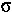
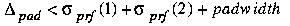
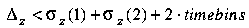

STAR TPC detector simulation software is required to simulate the response of the TPC detector volume and its electronics to the passage of charged particles through the TPC volume, including those from pp, pA and AA collisions. The STAR TPC Fast Simulator (TFS) has been designed to generate a large volume of event samples simulating the response of the TPC and the performance of the TPC hit reconstruction algorithm.
A GEANT Monte Carlo program takes tracks from an event generator and propagates them through the TPC, generating hits corresponding to each pad-row crossing. These GEANT hits are fed into the TFS as input. TFS assigns each GEANT hit a characteristic signal width (prf) in the transverse plane and a spatial resolution (z) in the drift direction. The parametrization of prf and z depend upon the intrinsic pad response, the drift length, track pad crossing angle, sense wire spacing, transverse and longitudinal diffusion of the TPC gas, electronics shaping time and sampling frequency. Then the hits are smeared about the known GEANT hit position according to a gaussian distribution function whose width is given by the prf parametrization. Those hits which are then found to overlap in both the pad plane projection and the drift direction are merged to form larger single hit clusters. Hits in the same pad-row are merged when their separation satisfies the condition

and

This condition places a cut-off on the deconvolution of close hits related to the expected performance of the hit reconstruction algorithm. Merged hits whose combined spatial width is smaller than 10 pad widths and 20 time bins are preserved and written to the output along with the isolated hits. The output of TFS then forms the input of the STAR TPC tracking system.
TFS has been written with flexibility in mind. It is controlled by parameter files for easy modification of the TPC running conditions. TFS is capable of merging events prior to and following the triggered event. This is particularly important in the high-luminosity environment of proton-proton collisions where non-triggered events will be registered during the time that the TPC volume is read out.
TFS Documentation
Contact for this package:
Dave Hardtke Iwona Sakrejda Dhammika Weerasundara